ATELIER
Vincent De Nil

I build worlds and the companies that make them real.
Belgian founder and art director, working between Stockholm and Raleigh, NC. I create alt-history worlds (The Divided States, WW2044, American Kingdoms) and build the companies that fund and make them grow: the Kaiser Cat Collective and Flagmaker & Print. Occasional video game modder.
Selected Dev Diaries
↗
Kaiserreich: Twenty Years of Alt-HistoryA retrospective on two decades of collaborative worldbuilding, and what comes next for the world's greatest alt-history IP · Read on KCC
↗
Designing Flags for Alt-History WorldsHow the practice of vexillography can help worldbuilders craft more believable nations · Read on Sea Lion Press (Guest post)
↗
How a Custom Flag Is Really MadeInside the factory: how new digital direct-to-garment (DTG) sublimation techniques help individual customers get their dream custom flag · Read on FMP